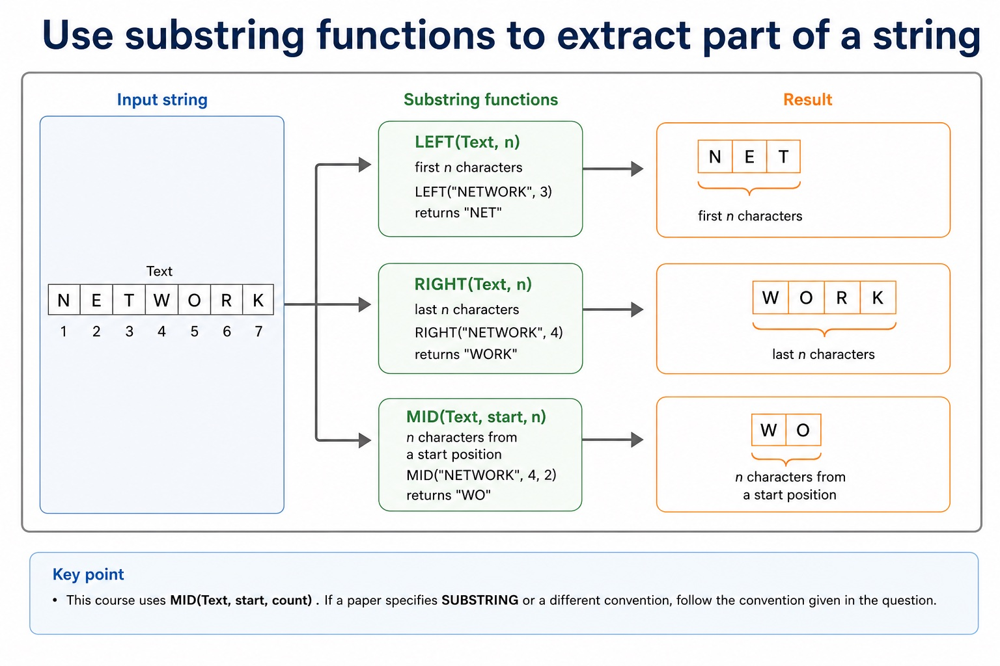
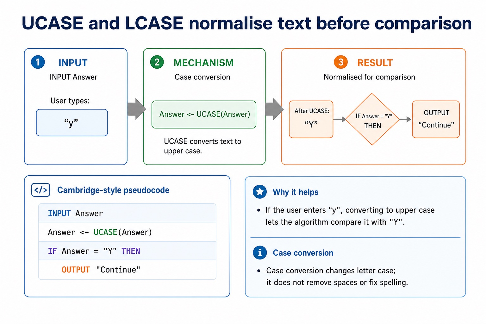
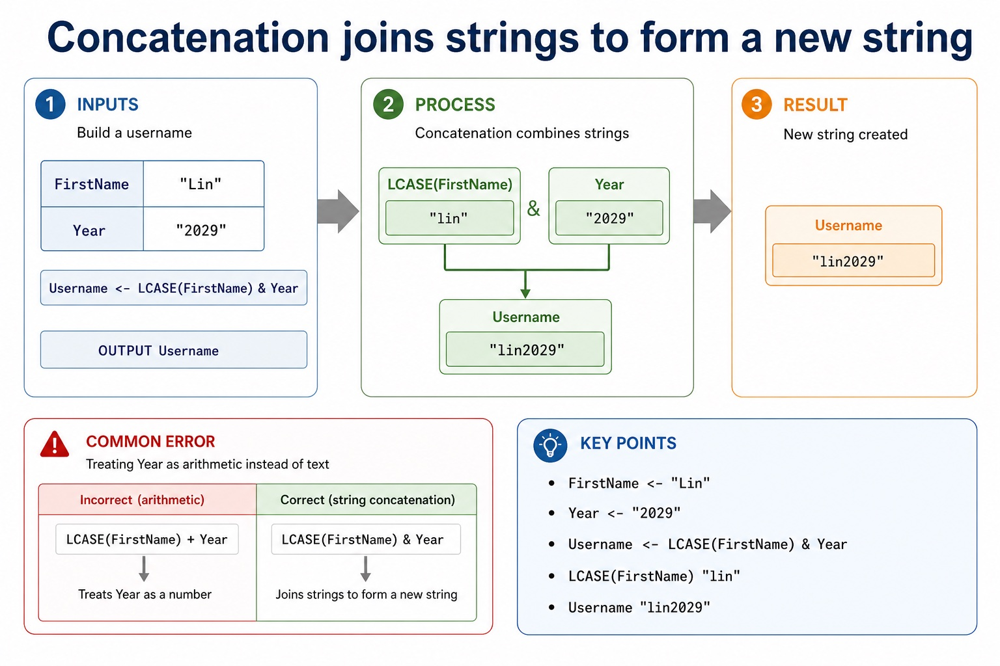
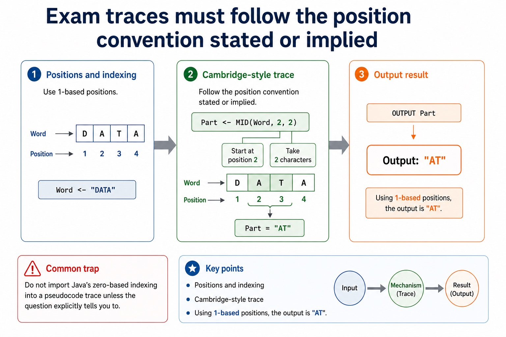

Strings are arrays of characters wearing quotation marks.
String handling lets an algorithm measure, extract, compare and rebuild text. Built-in functions such
as LENGTH, UCASE, LCASE, LEFT, RIGHT and
MID save you from writing a loop every time. Useful, but still strict: arguments, positions
and returned values must be traced exactly.
Tracereturned strings from length, case and substring operations
Separatepseudocode string positions from Java string indexes
"COMPUTER"8 charactersLENGTH("COMPUTER") = 8
MID("COMPUTER", 4, 3)"PUT"start position, count
UCASE("exam")"EXAM"same text, changed case
A built-in function returns a value. It does not politely explain your off-by-one error.
Why this matters
Paper 2 often uses strings in validation, searching, formatting and trace questions where one character changes the answer.
Common trap
Java uses zero-based indexes. Cambridge-style pseudocode examples commonly use positions starting at 1 unless a question states otherwise.
Warm-up hook
What does MID("MONITOR", 2, 3) return?
Assume positions start at 1 and the third argument is the number of characters to return.
1M
2O
3N
4I
5T
6O
7R
Choose the returned substring.
Strings
A string is a sequence of characters
Chinese support: string 字符串, character 字符, built-in function 内置函数, return value 返回值。
Cambridge-style assignment
Name <- "Ada"
Message <- "Hello, " & Name
OUTPUT Message
Reasoning
"Ada" is a string of three characters. & is used here for concatenation.
If a question uses a different concatenation operator, follow the question. The mark is for clear string construction.
A string is a sequence of characters
A string is a sequence of characters: source-grounded visual explanation.
Lesson fact: Cambridge-style assignment
Lesson fact: Name <- "Ada"
Lesson fact: Message <- "Hello, " & Name
Lesson fact: OUTPUT Message
Lesson fact: Reasoning
Lesson fact: "Ada" is a string of three characters. & is used here for concatenation.
Lesson fact: If a question uses a different concatenation operator, follow the question. The mark is for clear string construction.
LENGTH
LENGTH(String) returns the number of characters
Example
Word <- "ALGORITHM"
Size <- LENGTH(Word)
OUTPUT Size
Trace
Word"ALGORITHM"
LENGTH(Word)9
Size9
LENGTH(String) returns the number of characters
LENGTH(String) returns the number of characters: source-grounded visual explanation.
Lesson fact: Word <- "ALGORITHM"
Lesson fact: Size <- LENGTH(Word)
Lesson fact: OUTPUT Size
Lesson fact: Word "ALGORITHM"
Lesson fact: LENGTH(Word) 9
Substring functions
Use substring functions to extract part of a string
Function
Meaning
Example
LEFT(Text, n)
first n characters
LEFT("NETWORK", 3) returns "NET"
RIGHT(Text, n)
last n characters
RIGHT("NETWORK", 4) returns "WORK"
MID(Text, start, n)
n characters from a start position
MID("NETWORK", 4, 2) returns "WO"
This course uses MID(Text, start, count). If a paper specifies SUBSTRING or a different convention, follow the convention given in the question.
Use substring functions to extract part of a string

Use substring functions to extract part of a string: source-grounded visual explanation.
Lesson fact: Substring functions
Lesson fact: Function
Lesson fact: LEFT(Text, n)
Lesson fact: first n characters
Lesson fact: LEFT("NETWORK", 3) returns "NET"
Lesson fact: RIGHT(Text, n)
Lesson fact: last n characters
Lesson fact: RIGHT("NETWORK", 4) returns "WORK"
Lesson fact: MID(Text, start, n)
Lesson fact: n characters from a start position
Lesson fact: MID("NETWORK", 4, 2) returns "WO"
Lesson fact: This course uses MID(Text, start, count) . If a paper specifies SUBSTRING or a different convention, follow the convention given in the question.
Case conversion
UCASE and LCASE normalise text before comparison
Cambridge-style pseudocode
INPUT Answer
Answer <- UCASE(Answer)
IF Answer = "Y" THEN
OUTPUT "Continue"
ENDIF
Why it helps
If the user enters "y", converting to upper case lets the algorithm compare it with "Y".
Case conversion changes letter case; it does not remove spaces or fix spelling.
UCASE and LCASE normalise text before comparison

UCASE and LCASE normalise text before comparison: source-grounded visual explanation.
Lesson fact: Case conversion
Lesson fact: Cambridge-style pseudocode
Lesson fact: INPUT Answer
Lesson fact: Answer <- UCASE(Answer)
Lesson fact: IF Answer = "Y" THEN
Lesson fact: OUTPUT "Continue"
Lesson fact: Why it helps
Lesson fact: If the user enters "y" , converting to upper case lets the algorithm compare it with "Y" .
Lesson fact: Case conversion changes letter case; it does not remove spaces or fix spelling.
Concatenation
Concatenation joins strings to form a new string
Build a username
FirstName <- "Lin"
Year <- "2029"
Username <- LCASE(FirstName) & Year
OUTPUT Username
Trace
LCASE(FirstName)"lin"
Username"lin2029"
Common errortreating Year as arithmetic instead of text
Concatenation joins strings to form a new string

Concatenation joins strings to form a new string: source-grounded visual explanation.
Lesson fact: Concatenation
Lesson fact: Build a username
Lesson fact: FirstName <- "Lin"
Lesson fact: Year <- "2029"
Lesson fact: Username <- LCASE(FirstName) & Year
Lesson fact: OUTPUT Username
Lesson fact: LCASE(FirstName) "lin"
Lesson fact: Username "lin2029"
Lesson fact: Common error treating Year as arithmetic instead of text
Positions and indexing
Exam traces must follow the position convention stated or implied
1D
2A
3T
4A
Cambridge-style trace
Word <- "DATA"
Part <- MID(Word, 2, 2)
OUTPUT Part
Using 1-based positions, the output is "AT".
Common trap
Do not import Java's zero-based indexing into a pseudocode trace unless the question explicitly tells you to.
Exam traces must follow the position convention stated or implied

Exam traces must follow the position convention stated or implied: source-grounded visual explanation.
Lesson fact: Positions and indexing
Lesson fact: Cambridge-style trace
Lesson fact: Word <- "DATA"
Lesson fact: Part <- MID(Word, 2, 2)
Lesson fact: OUTPUT Part
Lesson fact: Using 1-based positions, the output is "AT" .
Lesson fact: Common trap
Lesson fact: Do not import Java's zero-based indexing into a pseudocode trace unless the question explicitly tells you to.
Java support only
Java method syntax is not Cambridge pseudocode
Cambridge-style pseudocode
Code <- LEFT(UCASE(Name), 3)
Java support example only
String code = name.toUpperCase().substring(0, 3);
Java's substring(0, 3) uses indexes 0 to 2. That is not the same notation as LEFT(Name, 3).
Java method syntax is not Cambridge pseudocode
Java method syntax is not Cambridge pseudocode: source-grounded visual explanation.